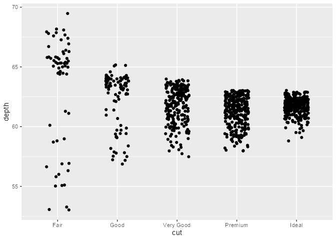
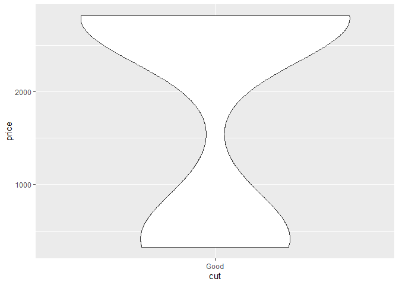
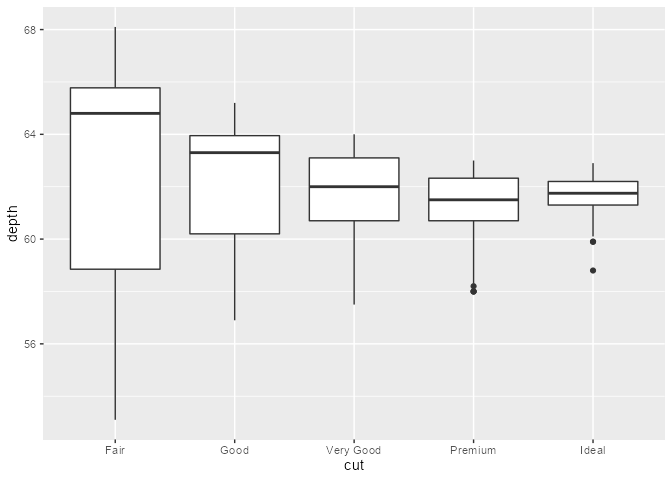

An experimental package for programmatically debugging ggproto methods with trace().
You can install the development version from GitHub with:
# install.packages("devtools")
devtools::install_github("yjunechoe/ggtrace")compute_layer method from PositionJitter
jitter_plot <- ggplot(diamonds[1:1000,], aes(cut, depth)) +
geom_point(position = position_jitter(width = 0.2, seed = 2021))
jitter_plot
ggbody(PositionJitter$compute_layer)
#> [[1]]
#> `{`
#>
#> [[2]]
#> trans_x <- if (params$width > 0) function(x) jitter(x, amount = params$width)
#>
#> [[3]]
#> trans_y <- if (params$height > 0) function(x) jitter(x, amount = params$height)
#>
#> [[4]]
#> x_aes <- intersect(ggplot_global$x_aes, names(data))
#>
#> [[5]]
#> x <- if (length(x_aes) == 0) 0 else data[[x_aes[1]]]
#>
#> [[6]]
#> y_aes <- intersect(ggplot_global$y_aes, names(data))
#>
#> [[7]]
#> y <- if (length(y_aes) == 0) 0 else data[[y_aes[1]]]
#>
#> [[8]]
#> dummy_data <- new_data_frame(list(x = x, y = y), nrow(data))
#>
#> [[9]]
#> fixed_jitter <- with_seed_null(params$seed, transform_position(dummy_data,
#> trans_x, trans_y))
#>
#> [[10]]
#> x_jit <- fixed_jitter$x - x
#>
#> [[11]]
#> y_jit <- fixed_jitter$y - y
#>
#> [[12]]
#> transform_position(data, function(x) x + x_jit, function(x) x +
#> y_jit)ggtrace() - with expressions wrapped in head()
ggtrace(
method = PositionJitter$compute_layer,
trace_steps = c(1, 1, 9, 12),
trace_exprs = rlang::exprs(
head(data), # What does the data passed in look like?
params, # What do the initial parameters look like?
head(dummy_data), # What is `dummy_data` defined at Step 8?
head(~line) # What does the last line evaluate to?
# - i.e., what is returned by the method?
)
)
# plot not printed to save space
jitter_plot
#> Tracing method compute_layer from <PstnJttr> ggproto.
#>
#> [Step 1]> head(data)
#> x y PANEL group
#> 1 5 61.5 1 5
#> 2 4 59.8 1 4
#> 3 2 56.9 1 2
#> 4 4 62.4 1 4
#> 5 2 63.3 1 2
#> 6 3 62.8 1 3
#>
#> [Step 1]> params
#> $width
#> [1] 0.2
#>
#> $height
#> [1] 0.04
#>
#> $seed
#> [1] 2021
#>
#>
#> [Step 9]> head(dummy_data)
#> x y
#> 1 5 61.5
#> 2 4 59.8
#> 3 2 56.9
#> 4 4 62.4
#> 5 2 63.3
#> 6 3 62.8
#>
#> [Step 12]> head(~line)
#> x y PANEL group
#> 1 4.980507 61.50684 1 5
#> 2 4.113512 59.77872 1 4
#> 3 2.083873 56.86655 1 2
#> 4 3.952698 62.42703 1 4
#> 5 2.054530 63.29763 1 2
#> 6 3.080538 62.77536 1 3
#>
#> Untracing method compute_layer from <PstnJttr> ggproto.
#> Call `last_ggtrace()` to get the trace dump.
last_ggtrace()
#> $`[Step 1]> head(data)`
#> x y PANEL group
#> 1 5 61.5 1 5
#> 2 4 59.8 1 4
#> 3 2 56.9 1 2
#> 4 4 62.4 1 4
#> 5 2 63.3 1 2
#> 6 3 62.8 1 3
#>
#> $`[Step 1]> params`
#> $`[Step 1]> params`$width
#> [1] 0.2
#>
#> $`[Step 1]> params`$height
#> [1] 0.04
#>
#> $`[Step 1]> params`$seed
#> [1] 2021
#>
#>
#> $`[Step 9]> head(dummy_data)`
#> x y
#> 1 5 61.5
#> 2 4 59.8
#> 3 2 56.9
#> 4 4 62.4
#> 5 2 63.3
#> 6 3 62.8
#>
#> $`[Step 12]> head(~line)`
#> x y PANEL group
#> 1 4.980507 61.50684 1 5
#> 2 4.113512 59.77872 1 4
#> 3 2.083873 56.86655 1 2
#> 4 3.952698 62.42703 1 4
#> 5 2.054530 63.29763 1 2
#> 6 3.080538 62.77536 1 3ggtrace() - with .print = FALSE instead (recommended)
ggtrace(
method = PositionJitter$compute_layer,
trace_steps = c(1, 9, 12),
trace_exprs = rlang::exprs(
data,
dummy_data,
~line
),
.print = FALSE
)
# plot not printed to save space
jitter_plot
#> Tracing method compute_layer from <PstnJttr> ggproto.
#>
#> [Step 1]> data
#>
#> [Step 9]> dummy_data
#>
#> [Step 12]> ~line
#>
#> Untracing method compute_layer from <PstnJttr> ggproto.
#> Call `last_ggtrace()` to get the trace dump.
jitter_tracedump <- last_ggtrace()
lapply(jitter_tracedump, nrow)
#> $`[Step 1]> data`
#> [1] 1000
#>
#> $`[Step 9]> dummy_data`
#> [1] 1000
#>
#> $`[Step 12]> ~line`
#> [1] 1000
lapply(jitter_tracedump, head)
#> $`[Step 1]> data`
#> x y PANEL group
#> 1 5 61.5 1 5
#> 2 4 59.8 1 4
#> 3 2 56.9 1 2
#> 4 4 62.4 1 4
#> 5 2 63.3 1 2
#> 6 3 62.8 1 3
#>
#> $`[Step 9]> dummy_data`
#> x y
#> 1 5 61.5
#> 2 4 59.8
#> 3 2 56.9
#> 4 4 62.4
#> 5 2 63.3
#> 6 3 62.8
#>
#> $`[Step 12]> ~line`
#> x y PANEL group
#> 1 4.980507 61.50684 1 5
#> 2 4.113512 59.77872 1 4
#> 3 2.083873 56.86655 1 2
#> 4 3.952698 62.42703 1 4
#> 5 2.054530 63.29763 1 2
#> 6 3.080538 62.77536 1 3draw_group method from GeomSmooth {ggplot2}
smooth_plot <- ggplot(mtcars, aes(mpg, hp)) +
geom_point() +
stat_smooth(method = "lm")
smooth_plot
#> `geom_smooth()` using formula 'y ~ x'
ggbody(GeomSmooth$draw_group)
#> [[1]]
#> `{`
#>
#> [[2]]
#> ribbon <- transform(data, colour = NA)
#>
#> [[3]]
#> path <- transform(data, alpha = NA)
#>
#> [[4]]
#> ymin = flipped_names(flipped_aes)$ymin
#>
#> [[5]]
#> ymax = flipped_names(flipped_aes)$ymax
#>
#> [[6]]
#> has_ribbon <- se && !is.null(data[[ymax]]) && !is.null(data[[ymin]])
#>
#> [[7]]
#> gList(if (has_ribbon) GeomRibbon$draw_group(ribbon, panel_params,
#> coord, flipped_aes = flipped_aes), GeomLine$draw_panel(path,
#> panel_params, coord))ggtrace() - get gList
ggtrace(
method = GeomSmooth$draw_group,
trace_steps = 7,
trace_exprs = quote(~line),
.print = FALSE
)
# plot not printed to save space
smooth_plot
#> `geom_smooth()` using formula 'y ~ x'
#> Tracing method draw_group from <GeomSmth> ggproto.
#>
#> [Step 7]> ~line
#>
#> Untracing method draw_group from <GeomSmth> ggproto.
#> Call `last_ggtrace()` to get the trace dump.
smooth_tracedump <- last_ggtrace()
smooth_tracedump
#> $`[Step 7]> ~line`
#> (gTree[geom_ribbon.gTree.167], polyline[GRID.polyline.168])
str(smooth_tracedump[[1]])
#> List of 2
#> $ :List of 5
#> ..$ name : chr "geom_ribbon.gTree.167"
#> ..$ gp : NULL
#> ..$ vp : NULL
#> ..$ children :List of 2
#> .. ..$ GRID.polygon.164 :List of 7
#> .. .. ..$ x : 'simpleUnit' num [1:160] 0.0455native 0.057native 0.0685native 0.08native 0.0915native ...
#> .. .. .. ..- attr(*, "unit")= int 4
#> .. .. ..$ y : 'simpleUnit' num [1:160] 0.767native 0.758native 0.75native 0.741native 0.733native ...
#> .. .. .. ..- attr(*, "unit")= int 4
#> .. .. ..$ id : int [1:160] 1 1 1 1 1 1 1 1 1 1 ...
#> .. .. ..$ id.lengths: NULL
#> .. .. ..$ name : chr "GRID.polygon.164"
#> .. .. ..$ gp :List of 4
#> .. .. .. ..$ fill: chr "#99999966"
#> .. .. .. ..$ col : logi NA
#> .. .. .. ..$ lwd : num 0
#> .. .. .. ..$ lty : num 1
#> .. .. .. ..- attr(*, "class")= chr "gpar"
#> .. .. ..$ vp : NULL
#> .. .. ..- attr(*, "class")= chr [1:3] "polygon" "grob" "gDesc"
#> .. ..$ GRID.polyline.165:List of 8
#> .. .. ..$ x : 'simpleUnit' num [1:160] 0.0455native 0.057native 0.0685native 0.08native 0.0915native ...
#> .. .. .. ..- attr(*, "unit")= int 4
#> .. .. ..$ y : 'simpleUnit' num [1:160] 0.767native 0.758native 0.75native 0.741native 0.733native ...
#> .. .. .. ..- attr(*, "unit")= int 4
#> .. .. ..$ id : int [1:160] 1 1 1 1 1 1 1 1 1 1 ...
#> .. .. ..$ id.lengths: NULL
#> .. .. ..$ arrow : NULL
#> .. .. ..$ name : chr "GRID.polyline.165"
#> .. .. ..$ gp :List of 3
#> .. .. .. ..$ col: logi NA
#> .. .. .. ..$ lwd: num 2.85
#> .. .. .. ..$ lty: num 1
#> .. .. .. ..- attr(*, "class")= chr "gpar"
#> .. .. ..$ vp : NULL
#> .. .. ..- attr(*, "class")= chr [1:3] "polyline" "grob" "gDesc"
#> .. ..- attr(*, "class")= chr "gList"
#> ..$ childrenOrder: chr [1:2] "GRID.polygon.164" "GRID.polyline.165"
#> ..- attr(*, "class")= chr [1:3] "gTree" "grob" "gDesc"
#> $ :List of 8
#> ..$ x : 'simpleUnit' num [1:80] 0.0455native 0.057native 0.0685native 0.08native 0.0915native ...
#> .. ..- attr(*, "unit")= int 4
#> ..$ y : 'simpleUnit' num [1:80] 0.688native 0.681native 0.674native 0.668native 0.661native ...
#> .. ..- attr(*, "unit")= int 4
#> ..$ id : int [1:80] 1 1 1 1 1 1 1 1 1 1 ...
#> ..$ id.lengths: NULL
#> ..$ arrow : NULL
#> ..$ name : chr "GRID.polyline.168"
#> ..$ gp :List of 7
#> .. ..$ col : chr "#3366FF"
#> .. ..$ fill : chr "#3366FF"
#> .. ..$ lwd : num 2.85
#> .. ..$ lty : num 1
#> .. ..$ lineend : chr "butt"
#> .. ..$ linejoin : chr "round"
#> .. ..$ linemitre: num 10
#> .. ..- attr(*, "class")= chr "gpar"
#> ..$ vp : NULL
#> ..- attr(*, "class")= chr [1:3] "polyline" "grob" "gDesc"
#> - attr(*, "class")= chr "gList"compute_group method from StatSina {ggforce}
library(ggforce)
#> Warning: package 'ggforce' was built under R version 4.1.1
sina_plot <- ggplot(diamonds[diamonds$cut == "Ideal",][1:50,], aes(cut, depth)) +
geom_violin() +
geom_sina(seed = 2021)
sina_plot
ggbody(StatSina$compute_group)
#> [[1]]
#> `{`
#>
#> [[2]]
#> if (nrow(data) == 0) return(NULL)
#>
#> [[3]]
#> if (nrow(data) < 3) {
#> data$density <- 0
#> data$scaled <- 1
#> } else if (method == "density") {
#> range <- range(data$y, na.rm = TRUE)
#> bw <- calc_bw(data$y, bw)
#> dens <- compute_density(data$y, data$w, from = range[1],
#> to = range[2], bw = bw, adjust = adjust, kernel = kernel)
#> densf <- stats::approxfun(dens$x, dens$density, rule = 2)
#> data$density <- densf(data$y)
#> data$scaled <- data$density/max(dens$density)
#> data
#> } else {
#> bin_index <- cut(data$y, bins, include.lowest = TRUE, labels = FALSE)
#> data$density <- tapply(bin_index, bin_index, length)[as.character(bin_index)]
#> data$density[data$density <= bin_limit] <- 0
#> data$scaled <- data$density/max(data$density)
#> }
#>
#> [[4]]
#> if (length(unique(data$x)) > 1) {
#> width <- diff(range(data$x)) * maxwidth
#> } else {
#> width <- maxwidth
#> }
#>
#> [[5]]
#> data$width <- width
#>
#> [[6]]
#> data$n <- nrow(data)
#>
#> [[7]]
#> data$x <- mean(range(data$x))
#>
#> [[8]]
#> dataggtrace() - with one expression evaluated at multiple steps
ggtrace(
method = StatSina$compute_group,
trace_steps = c(1, 8),
trace_exprs = quote(data),
.print = FALSE
)
# plot not printed to save space
sina_plot
#> Tracing method compute_group from <StatSina> ggproto.
#>
#> [Step 1]> data
#>
#> [Step 8]> data
#>
#> Untracing method compute_group from <StatSina> ggproto.
#> Call `last_ggtrace()` to get the trace dump.
sina_tracedump <- last_ggtrace()
waldo::compare(sina_tracedump[[1]], sina_tracedump[[2]])
#> `old` is length 4
#> `new` is length 8
#>
#> `names(old)[2:4]`: "y" "PANEL" "group"
#> `names(new)[2:8]`: "y" "PANEL" "group" "density" "scaled" "width" "n"
#>
#> `old$x` is an S3 object of class <mapped_discrete/numeric>, an integer vector
#> `new$x` is a double vector (1, 1, 1, 1, 1, ...)
#>
#> `old$density` is absent
#> `new$density` is a double vector (0.46323885621947, 0.213496721362797, 0.497309776120959, 0.543803948542487, 0.539050969762089, ...)
#>
#> `old$scaled` is absent
#> `new$scaled` is a double vector (0.845470465475205, 0.38965896311279, 0.907654274371047, 0.992512116219465, 0.983837318913703, ...)
#>
#> `old$width` is absent
#> `new$width` is a double vector (0.9, 0.9, 0.9, 0.9, 0.9, ...)
#>
#> `old$n` is absent
#> `new$n` is an integer vector (50, 50, 50, 50, 50, ...)